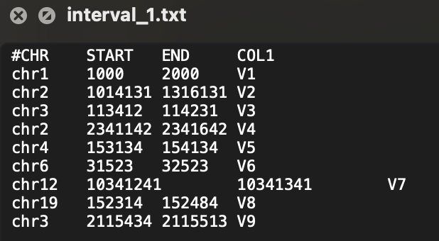

功能注释
为了进一步定位易感 SV 并探索其生物学原理，往往需要对 SV 进行功能注释。为快速进行多样本多资源的功能注释，SDFA 设计了下图所示的索引滑动窗口算法加速注释过程。

同时，为进行多资源定制化注释，SDFA 设计了post-annotate注释方式，通过下图所示的配置文件可以定制输出文件：
配置文件
SDFA 借鉴Vcfanno工具的post annotation概念，定义了一个用于配置注释资源和输出结果的配置文件，具体解释如下：
| 参数 | 参数解释 | 是否必须 (*代表必须，.代表可选) |
|---|---|---|
[[annotation]] |
一个新注释资源的开始标识符 | * |
file |
注释资源文件的完整路径 | * |
type |
注释资源的类型 (当前支持 gene、interval和svdatabase三种类型) |
* |
names |
输出结果的列名 | . |
fields |
输入文件的列名 | . |
opts |
对应输出列的函数 | 需要和names大小匹配 |
对于上述参数，我们举一个例子：
[!NOTE|label:Example 1]
下面我们对
interval_1.txt文件进行操作，该文件是一个interval类型的文件，文件大致为：
单行之间的元素通过
\t进行分割，现在我们想获取与SV相关的COL1列，因此此处设置fields=["COL1"]，同时我们想输出列为name，因此设置names=["name"]。最后的配置文件如下：[[annotation]] file=/Users/wenjiepeng/Desktop/SDFA_4.0/test/annotation/data/interval_1.txt type=interval names=["name"] fields=["COL1"] opts=["concat"]完成上述配置文件后，我们通过下述指令进行注释：
java -jar sdfa.jar annotate \ --config /Users/wenjiepeng/Desktop/SDFA_4.0/test/annotation/data/config.txt \ -t 4 -d /Users/wenjiepeng/Desktop/SDFA_4.0/test/vcf \ -o /Users/wenjiepeng/Desktop/SDFA_4.0/test/annotation/res注释后结果如下：
其中fileID对应的是该文件夹(
/Users/wenjiepeng/Desktop/SDFA_4.0/test/vcf)下不同的SV文件。

注释资源
SDFA 支持集成外部数据库进行 SV 注释，前提是外部数据文件符合以下基本格式要求：
- 必须使用 tab符（
\t）作为分隔符。 - 注释文件必须包含一个标题行，其列名以数字符号（
#）开头（以##开头的行将被忽略）。
另外，SDFA 在引入区间注释文件和 SV 数据库文件对已有SV数据进行注释时，必须满足以下具体条件：
对于区间注释文件而言，需满足如下要求：
| Column | Name | Type | Example | | ------ | ---------------- | ------- | ------- | | 1 | Chromosome | String | chr1 | | 2 | Start Position | Integer | 1000 | | 3 | End Position | Integer | 3000 | | 4 | [Feature 1 Name] | String | V1 | | … | … | … | … |
对于SV数据库文件，需满足如下要求：
| Column | Name | Type | Example | | ------ | ---------------- | ------- | ------- | | 1 | Chromosome | String | chr1 | | 2 | Start Position | Integer | 1000 | | 3 | End Position | Integer | 3000 | | 4 | SV Length | Integer | 2000 | | 5 | SV Type | String | DEL | | 6 | [Feature 1 Name] | String | V1 | | … | … | … | … |